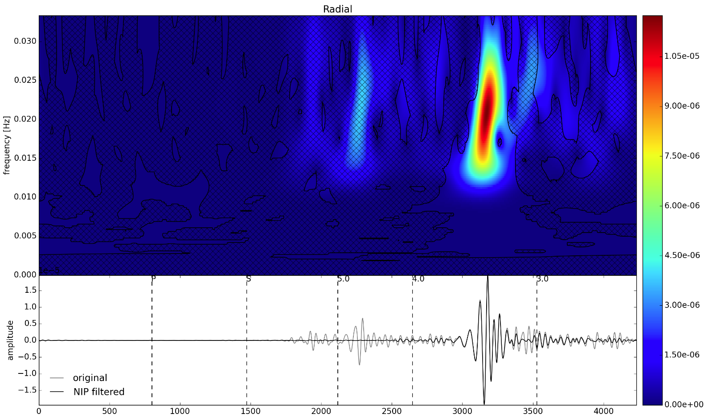

Advanced Filtering¶
One of the benefits of the Stockwell transform as apposed to wavelet transforms is that it directly preserves phase in the same way that a Fourier transform does, which makes filters based upon phase relationships possible in time-frequency space. In the example below, we use the Normalized Inner Produce filter of Meza-Fajardo et al., (2015) to pass retrograde Rayleigh waves (in any frequency) from a particular azimuth.
from obspy import read
st = read("tests/data/mdj-ic-00-lh[rtz]-2010-01-10-00-27.sac", format='SAC')
rs = st.select(component='R')[0].data
ts = st.select(component='T')[0].data
v = st.select(component='Z')[0].data
tr = st[0]
fs = tr.stats.sampling_rate

from particleman import stransform, istransform
import particleman.filter as filt
# Get the Stockwell transforms
Sr = stransform(radial, fs)
Sv = stransform(vertical, fs)
# Advance the phase of the vertical transform
Sv_advanced = filt.shift_phase(Sv, polarization='retrograde')
# Get the normalized inner product and use it to make a filter
nip = filt.NIP(Sr, Sv_advanced)
retro_filter = filt.get_filter(nips, polarization='retrograde')
# Apply the filter to the transforms, and return to the time-domain
rf = istransform(Sr * retro_filter, Fs=fs)
vf = istransform(Sv * retro_filter, Fs=fs)